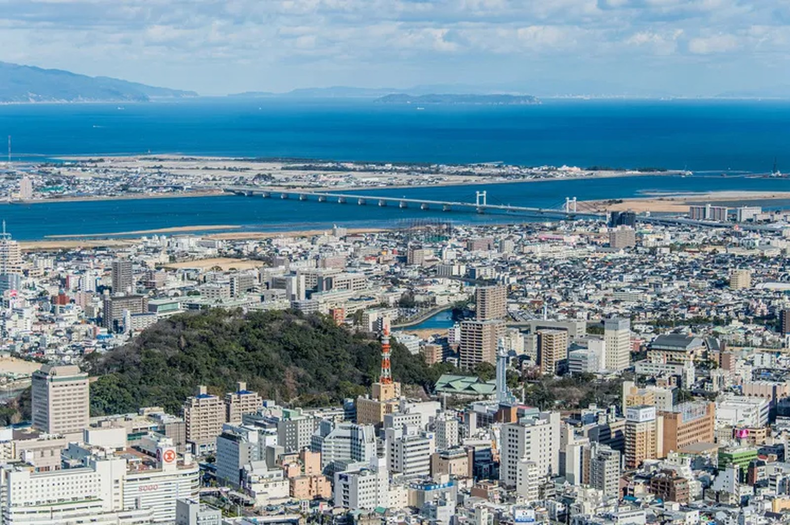

01
Lease
設備リース
仮設（プレハブ）施設や応急仮設住宅、現場事務所などへ、長期でご利用いただく設備を計画的にご提供します。浄化槽・受水槽・キュービクル等の大型設備にも対応します。
設備リースを詳しく →回収から再活用まで。エコリースは「設備リース」「設備レンタル」「ビルメンテナンス」の3つの事業で、設備の一生に寄り添い、“捨てない”循環を担います。

役目を終えた設備を回収し、洗い、整え、修理して、もう一度現場へ。エコリースの事業は「設備リース」「設備レンタル」「ビルメンテナンス」の3つですが、そのすべてが"ひとつの循環"でつながっています。
浄化槽・受水槽・キュービクルといった大型設備から、空調・防災設備まで。徳島の本社と名古屋・大阪の拠点、5ヶ所の資材置き場を軸に、全国44都道府県の現場へお届けしています。
使い捨てないこと。それは、企業活動がそのまま環境活動になるということ。私たちはその仕組みを、40年以上かけて育ててきました。
3つの事業を見る仮設（プレハブ）施設や応急仮設住宅、現場事務所などへ、長期でご利用いただく設備を計画的にご提供します。浄化槽・受水槽・キュービクル等の大型設備にも対応します。
設備リースを詳しく →
イベント・短期工事・繁忙期など、必要な期間だけ設備をお使いいただけます。空調・防災・電気設備をスピーディーにお届けし、使い終えたら回収・再整備します。
設備レンタルを詳しく →
建物の設備を、長く・安全に使い続けるために。点検・清掃・保守から修繕まで、施設の価値を保つメンテナンスをワンストップでお引き受けします。
ビルメンテナンスを詳しく →回収・整備・保管・再提供。各事業がつながることで、設備は何度も現場へ還ります。それが「捨てない」を支える仕組みです。
役目を終えた設備を、全国の現場から回収します。まだ使えるものを見極めるところから、循環は始まります。

一台ずつ丁寧に洗い、動作と劣化の状態をチェック。再び現場に出せるかどうかを、ここで見極めます。

不具合のある箇所は直し、部品を替え、性能を回復させます。手間をかけるほど、設備の寿命は延びていきます。
次の出番まで、資材置き場で適切にストック。5ヶ所の置き場が、すぐ届けられる体制を支えています。

必要とされる現場へ、必要な期間だけお届け。長期ならリース、短期ならレンタルでお応えします。
そしてまた、誰かの現場で活躍する。使い終わりは終点ではなく、次のはじまりです。